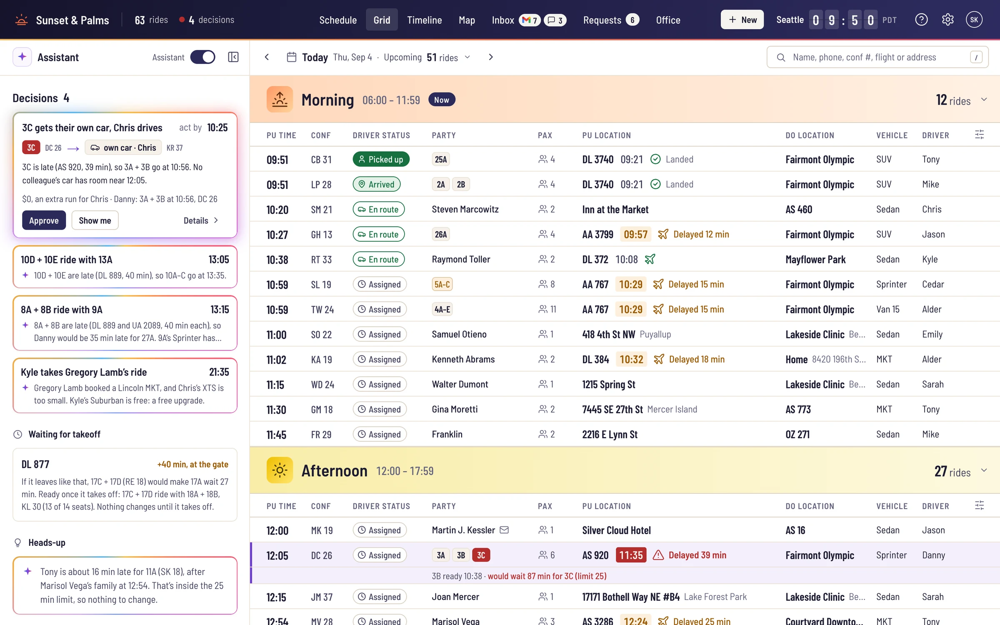
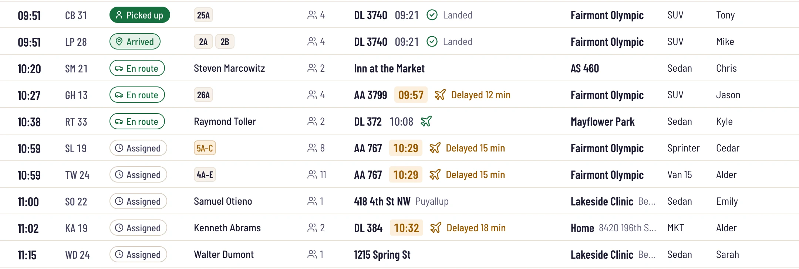
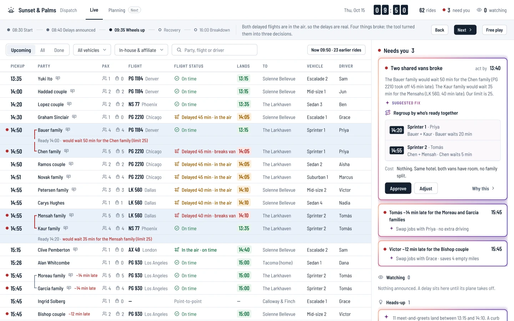
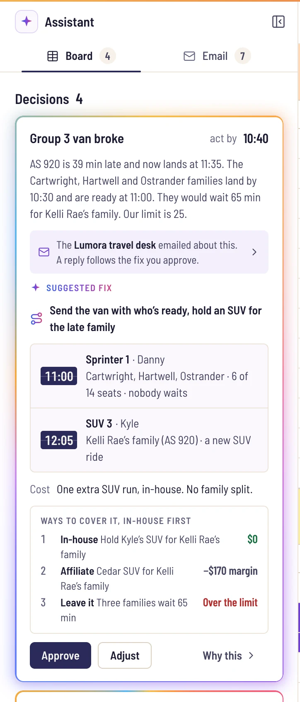
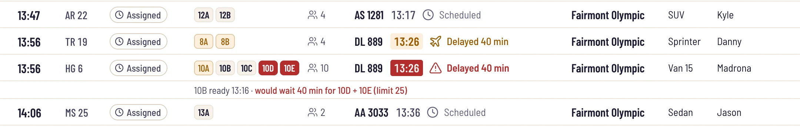
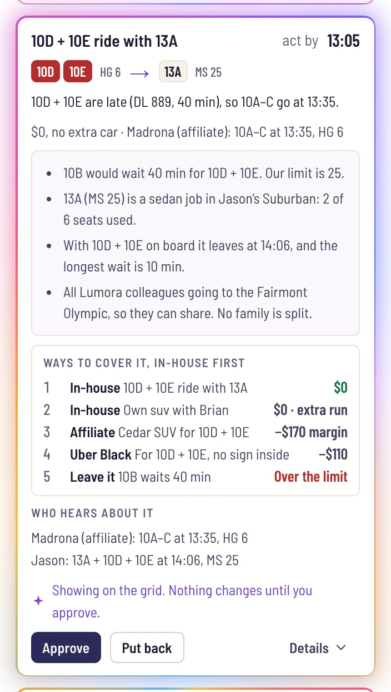
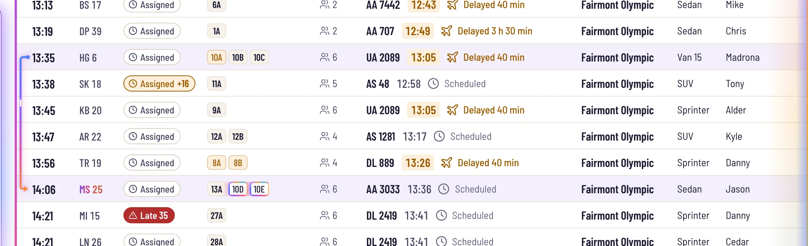
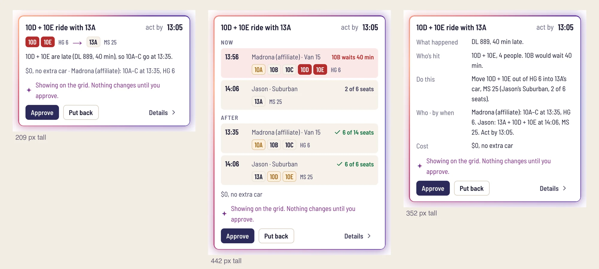
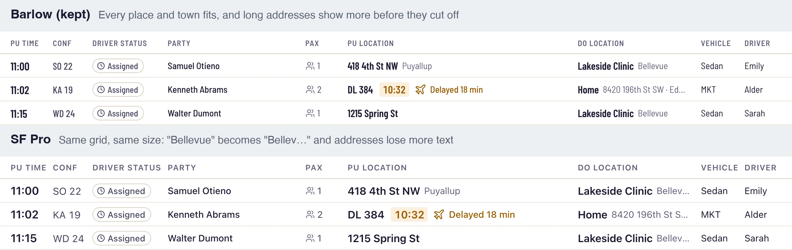
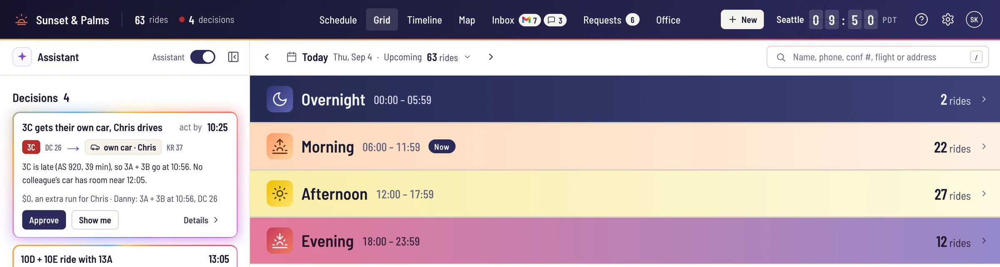

I’m Rustam, a product designer. I also dispatch for a small chauffeur company in Seattle, from Florida. I’ve done both for almost two years. This is the dispatch system I wished I had on my worst day.
The 60-second version
On a busy day, one dispatcher re-plans dozens of rides by hand while the phone keeps ringing.
The system we use moves pickup times when flights slip, and tells no one. And one wrong detail on a call, 8 AM instead of 8 PM, ruins a ride.
A redesign of the whole dispatch system. It watches every flight. When a plan breaks, the AI suggests the fix a veteran dispatcher would make, and shows it on the grid.
Nothing changes until the dispatcher approves, and every approval can be undone.
A working prototype of one real day: 64 rides, every name made up. You can click through all of it.
Nobody but me has tested it yet. That’s the next step.
Thursday, September 4, 2025
A corporate client flew a group into Seattle for a retreat: 31 of our 64 rides that day, all from SeaTac to the Fairmont Olympic. Families were booked to share vans. Then the flights started running late.
I was alone that day. Flights started getting delayed in the air, and some hadn’t even taken off. There were a lot of groups, and all of them needed transportation.
I had to change everything by hand and let each driver know. The greeter at the airport was helping, of course. And I was taking phone calls to book new rides. It was a complete mess, and there was no time for me.
Me, about Sep 4
It took from the morning until the last ride at night. I swapped groups around and created a couple of new rides. Nothing went to an affiliate, and no family was split. But that was only because of experience.
So that’s the bar for this design: a dispatcher on their first day should be able to run that day like a veteran.

The delay isn’t the problem. The silence is.
Limo Anywhere, the system we use, changes pickup times when flights slip. It doesn’t tell anyone.
It does not track the flight. It just updates the pickup time automatically, so it doesn’t even tell you that it changed. You log in and see a pickup at 6. The flight gets delayed two hours, and it just changes to 8 AM without telling you. Then you look at the schedule, and that driver already has an 8 AM pickup. That’s when the juggle starts.
Me, on the system we use
And while you juggle, the phone rings. People book rides by phone, and every detail on that call matters.
If they have three checked bags and you send a sedan, that’s it. It’s not going to fit. If it’s 8 AM and you accidentally put 8 PM, the reservation is ruined. The wrong date, ruined. The wrong flight, ruined.
Me, on taking bookings by phone
That night I went through every booking I’d made and checked it against the call recordings. I fixed my errors. There were some.
Passengers notice the phone, too. They tell us so in reviews and on calls:
It’s so nice talking to a human nowadays. Everything is AI. You can’t even talk to a real person.
Our passengers
Let the board carry the flights, so the dispatcher can stay on the call.

Three rules for every screen
The move first, the why one click away
Every suggestion opens with one plain sentence: what happened, and what to do. The reasons, the policy and the cost sit in the details.
The AI prepares, the dispatcher decides
Nothing is sent and no ride changes without approval. Every approval can be undone.
Familiar first, minus the friction
A veteran should know the grid on day one. I kept what you always need to see (conf number, pickup time, pickup and drop-off, driver) and dropped the steps our team already skips.
My first cards read like reports
I started in Figma, on a made-up day. The assistant sat on the right, and each card explained its problem in a paragraph.

By Oct 9 the board was a clickable prototype running the real day. On Oct 13 I walked through the cards as a dispatcher, out loud, and wrote down what I said.

AI suggestions right now are very vague. To understand them, you need to really dive into the topic. I want it to feel super simple.
Me, Oct 13
The title of the card is bad.
Me, card 2. It said “No driver for Kevin Doyle”: the symptom, not the move.
At card 3 I stopped.
Let’s scratch everything. First we need to look at the schedule. I’ll combine the late rides by myself, explain what I did, and that logic will become the AI’s.
Me, Oct 13
Better wording couldn’t fix those cards. The problems behind them weren’t built the way a real day breaks.
I dispatched the day by hand
I reset the board to the plan as booked: the real delays, and nothing fixed. Then I did what I do at work. I dragged late families into cars that could take them, and after each move I wrote down why.
Three moves kept coming back. They became the assistant’s rules.
The late family rides in a car with empty seats
13A is a sedan job going out in Jason’s SUV, with 4 empty seats. 10D and 10E ride along, and Group 10’s van leaves on time.
Late families move into a van with room, so their driver makes the next ride
8A and 8B are late, which would make Danny 35 minutes late for 27A. 9A’s Sprinter has room, so they ride with 9A and Danny is on time.
Nobody to share with: book a new ride
No colleague’s car is near 3C’s landing. They get their own ride, the smallest car that fits, with a free in-house driver.
And the rules around them:
- Only colleagues share a car. A private booking always rides alone.
- Nobody waits more than 25 minutes. “That is the limit. After that it’s too much, and frustration is going to crawl up.”
- A bigger car is a free upgrade, and the passenger gets a text about it. A smaller car, never, even if the people fit: “the luggage would not fit. That’s usually why people book bigger cars.”
- Our own drivers first, then a trusted affiliate, then Uber Black. Never anything that splits a family.
“The right way of doing things.”
The owner, after reading these rules
Codes instead of names
A bad morning puts too many names on screen: passengers, flights, drivers. So every family gets a seat-style code, the group number plus a letter. Group 3 is 3A 3B 3C. A move reads like a sentence: 10D rides with 13A.

Simple is better. Surnames are big and confusing. When you see the same surname in a suggestion and again in a reservation, it’s a lot. Just put 3C, or whatever the group is. It’s super simple to find.
Me, on codes
Confirmation numbers got the same treatment. A passenger’s code is their initials plus a number, like RT 33, so a caller can say it over the phone. The six-digit record number stays behind the scenes.
It shows the fix on the grid, then waits
The assistant sits on the left, right next to the grid, on purpose.
I moved the assistant to the left so there can be arrows from it, pointing to where it wants to add a group, or where it wants to make a new ride. So it talks visibly, not only through text.
Me, on why it sits on the left
Each card follows the walkthrough’s lesson: the move first, in codes, and very little text. Everything else is one click away in Details.

1234567- The move, in codes, and the time to act by.
- Who moves where: 10D and 10E leave van HG 6 for 13A’s car, MS 25.
- One line on what happened, one on what it costs.
- Why, against the 25-minute limit: 10B would wait 40; with this fix the longest wait is 10.
- Every way to cover it, our own drivers first, with what each costs.
- Who hears about it, so drivers and partners are never surprised.
- Approve, or put it back. Nothing has changed yet.
Show me acts the fix out on the grid. The families’ chips fly from their old car to the new one, an arrow links the two rides, and everything the AI touched glows. The glow means “not saved yet.” Its colors come from Apple Intelligence’s edge glow: whatever the AI touches glows until a person approves it.

Approve saves every part of the fix as one step, tells the drivers, and logs it with the reason. Undo takes the whole thing back.
I tried three card styles on the same four fixes. Story won. It leads with the move, and it’s less than half the height of the others.

AI for the robotic work
AI is also good at the robotic things. Someone emails asking to change a pickup time, update a card, or update their account. The reply is already written. You click Approve next to it, and the AI updates the ride. That saves you time.
Me, on email and texts
The rest of the redesign is a lot of small fixes over what we use today:
- Flight status in the grid: landed, delayed, or held at the gate.
- Families sharing a van in one row, by code.
- One reservation window for new rides, edits, quotes and web bookings.
- Web bookings accepted in one click.
- Gmail and SMS in one inbox.
- Search that finds a ride by anyone on it: the passenger, whoever booked it, any phone or email.
The schedule doesn’t fall apart every day. In my words: “It falls apart when there’s a really big mess at the airport, or when we have 60 or 70 rides. With 20, it’s pretty simple.” The assistant is for those days. The rest is for every day.
A font that fits the grid, and colors that keep their meaning
Barlow, because the grid is the job
I tried SF Pro, Inter and Geist on the real board, against Barlow at the same size.
In every other font, long places started losing their town. SF Pro also only shows on Apple devices. And Barlow’s narrow, DIN-like shapes fit the board’s airport theme: a split-flap clock, landing times, flight numbers. Semi Condensed for words, Condensed for numbers.

Golden Hour, kept out of the rows
The first palette was correct, and boring. I built a Palette Lab that recolors the live board, and picked Golden Hour, taken from my own sunset photos.
One rule kept it honest: on a dispatch board, warm colors mean trouble. Amber is a delay. Red is “act now.” So the sunset lives only in the frame: the header’s edge, the logo, and the four parts of the day painted as skies.
Every status keeps one meaning, and none relies on color alone: each has an icon and words too, for color-blind dispatchers. The AI gets its own colors, and uses them only on what it touched.

Why I designed it in code
With Claude Code it’s easier to design than in Figma, because you build an interactive prototype and see your actual work, and where it falls apart. In Figma it’s a basic prototype, mostly static screens.
Me, on Figma and code
Dispatch is drag, approve, undo, and a flight that changes while you look at it. I couldn’t judge any of that in static frames. So after the first comps, I built the prototype with Claude Code, an AI coding tool. I described each screen and rule, clicked through what it built, and changed what was wrong. The rules and the moves come from my own dispatching and the owner’s review.
It runs on the real day with made-up names. Someone opening the link gets a sign-in that fills itself in, and a 1-minute tour on the real board, so the first look isn’t 64 rides at once.
The ten days
- OCT 6The owner’s rules first: wait limits, nothing replanned until wheels-up, which car fits.
- OCT 7Figma comps, then the first clickable board.
- OCT 9Swapped the made-up day for the real Sep 4: 64 rides.
- OCT 10–12The rest of the system: reservations, requests, inbox, settings. Barlow and Golden Hour.
- OCT 13Walked through the cards. “Let’s scratch everything.” Dispatched the day by hand.
- OCT 14My moves became the assistant’s rules.
- OCT 15Story cards, the glow, codes people can say. Every name made up. Live.
- OCT 16The sign-in and the tour, for first-timers.
Next: find out if a first-timer gets it
One question
Nobody has used it but me. I’ll ask friends and other dispatchers one question:
Tomorrow’s schedule, built for the drivers
Today, tomorrow is planned by hand the night before. Next, the system suggests it, with each driver’s day in mind: